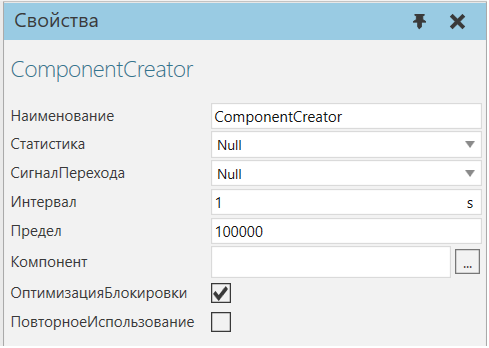
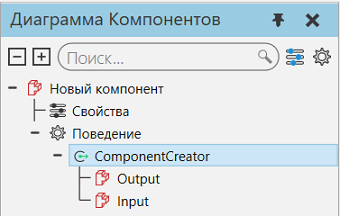

|
Генератор компонентов позволяет использовать компонент в качестве шаблона для создания новых компонентов во время симуляции.

Порты Component Creator перечислены вместе с поведением на панели Диаграммы Компонентов.

Свойства
Название
|
Описание
|
Наименование
|
Определяет наименование генератора компонентов.
|
Статистика
|
Определяет поведение статистики, которое собирает статистику, созданную генератором компонентов.
|
СигналПерехода
|
Определяет логический сигнал, сигнализирующий о прибытии и уходе компонента в генераторе. Значение True сигнализирует о прибытии компонента. Значение False сигнализирует об уходе компонента.
|
Интервал
|
Определяет интервал (в секундах) для создания компонента в генераторе.
|
Ограничение
|
Определяет максимальное количество компонентов, которые генератор может создать. Вы можете установить предел на ноль, а затем использовать сценарий Python для ручного управления созданием компонентов.
|
Компонент
|
Определяет компонент для использования в качестве шаблона для создания новых компонентов. Вы можете определить URI, который указывает на файл компонента или ссылку на VCID компонента, используя следующий синтаксис:
vcid:[vcid компонента] .
|
ОптимизацияБлокировки
|
Включает/выключает оптимизацию генератора при создании новых компонентов, тем самым улучшая производительность симуляции.
Если True, генератор не будет проверять емкость, а будет прослушивать события. Генератор информируется, например, компонентом или контроллером мощности, когда есть возможность сделать новый компонент.
|
ПовторноеИспользование
|
Включает/выключает повторное использование компонентов, созданных генератором, тем самым улучшая производительность симуляции.
Если установлено значение True, динамические компоненты, удаленные во время симуляции, повторно используются для создания новых компонентов, тем самым уменьшая выделение памяти.
Предупреждение. Будьте осторожны при повторном использовании компонентов, которые были изменены во время симуляции, например при изменении материала узла.
|
|